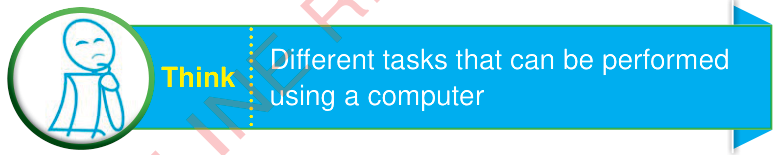
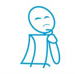

Different tasks that can be performed using a computer


Concept of patterns
Patterns are everywhere around us.A pattern is something arranged in a logical sequence, which makes it easier to predict the next element.Some patterns are natural such as zebra stripes and others are man-made such as chessboard as shown/described in Figure 1.